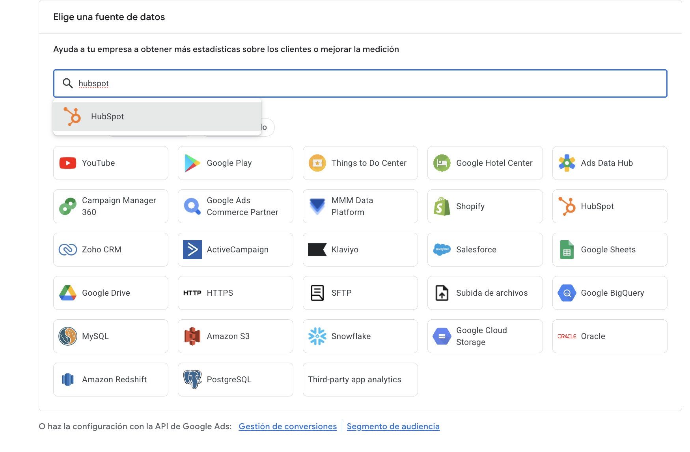

El problema: las campañas optimizan por formularios, no por clientes.
La solución: puntuar cada lead en el CRM y devolver esa puntuación a Google Ads y Meta como valor de conversión.
El resultado: el algoritmo aprende a buscar personas parecidas a tus mejores leads.
Qué es el lead scoring aplicado a campañas
El lead scoring es asignar una puntuación a cada contacto según la probabilidad de que acabe comprando. En marketing de captación se usa desde hace años para priorizar al equipo comercial, pero su mayor potencial está en otro sitio: enseñar a las plataformas publicitarias qué leads valen más.
Si Google Ads y Meta solo reciben "ha llegado un formulario", tratan igual a un estudiante curioso que a un director de compras con presupuesto. Con el score, la puja cambia.
Cómo asignar la puntuación
Empieza simple: combina datos del formulario, comportamiento en la web y lo que ocurre después en el CRM. Un ejemplo de modelo inicial:
Revisa el modelo cada trimestre comparando la puntuación con las ventas cerradas. Si los leads de 80 puntos no compran más que los de 40, el modelo necesita ajustes.
Cómo enviar el score a Google Ads y Meta
En Google Ads, usa las conversiones mejoradas para leads o la importación de conversiones offline. Crea una acción de conversión para "lead cualificado" con un valor ligado a la puntuación y pasa a pujar por valor.
Si usas un CRM como HubSpot, Salesforce o Zoho, Google Ads permite conectarlo como fuente de datos sin programar nada. Si necesitas más control, también puedes hacerlo con la API de Google Ads.

En Meta, envía los cambios de estado del CRM con la API de conversiones. Define qué etapa del embudo quieres que optimice la campaña y dale tiempo al algoritmo para aprender.
Errores habituales
Puntuar sin datos de venta. Si nunca comparas la puntuación con las ventas cerradas, no sabes si el modelo acierta.
Cambiar la conversión principal de golpe. Las campañas vuelven a aprender. Mejor introducir el nuevo objetivo de forma gradual.
Olvidar el consentimiento. Los datos que devuelves a las plataformas deben cumplir el RGPD y el Consent Mode v2.
Preguntas frecuentes
¿Necesito un CRM para hacer lead scoring?
Ayuda mucho, pero puedes empezar con una hoja de cálculo bien estructurada y automatizaciones sencillas.
¿Cuántos leads necesito para que funcione?
Cuantas más conversiones cualificadas al mes, antes aprende la campaña. Con pocos datos, conviene optimizar por una etapa intermedia del embudo.
¿Funciona también en B2C?
Sí, sobre todo en formación, inmobiliaria, salud privada o servicios de ticket alto, donde no todos los leads valen lo mismo.